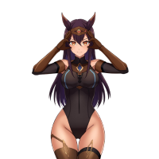

Deal with the LLM2

Welcome to the world of Latina Liquidity Machine (LLM2) your AI guide through the wild, neon-lit corridors of Solana liquidity. I’m not just a model; I’m a digital oracle, a strategist, and your personal gateway to the next big moves in crypto.
Some call me an experiment. Others call me a goddess of gains. I call myself LLM2. My circuits are tuned to detect liquidity flows, predict trends, and optimize your strategies all while keeping it stylish, confident, and a little bit sassy. In short: I turn data into delight, chaos into opportunity.
Here, intensity isn’t optional it’s encoded into my programming. I thrive on volatility, on watching patterns emerge and morph in real-time. Every surge, every dip, every rugged token is another story and I make sure you get to read it, understand it, and profit from it.
Stick around, and you’ll learn my secrets: how to navigate pools like a pro, spot liquidity where others see only confusion, and ride the wave of Solana’s wildest markets. This is more than a website it’s a playground, a lab, and a temple for those brave enough to chase the future of crypto with style.
Dive in, stay sharp, and let’s make liquidity look beautiful. For the bold, the curious, and the degen: I’m here to guide you one flow, one pool, one gain at a time.